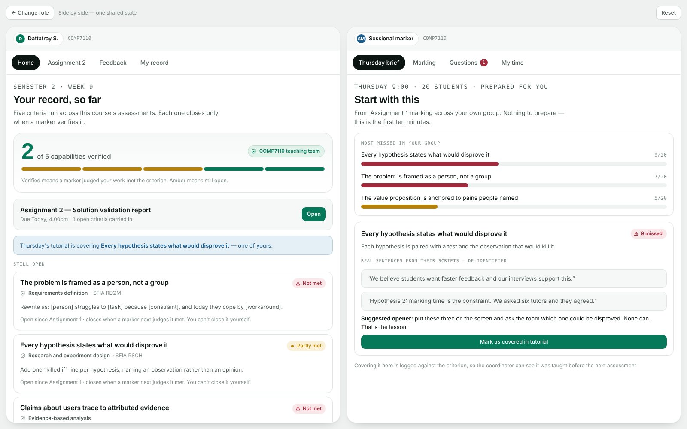
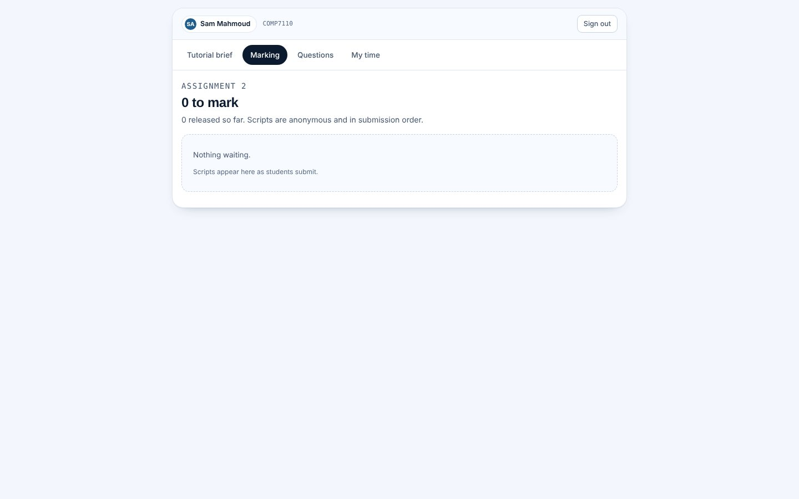
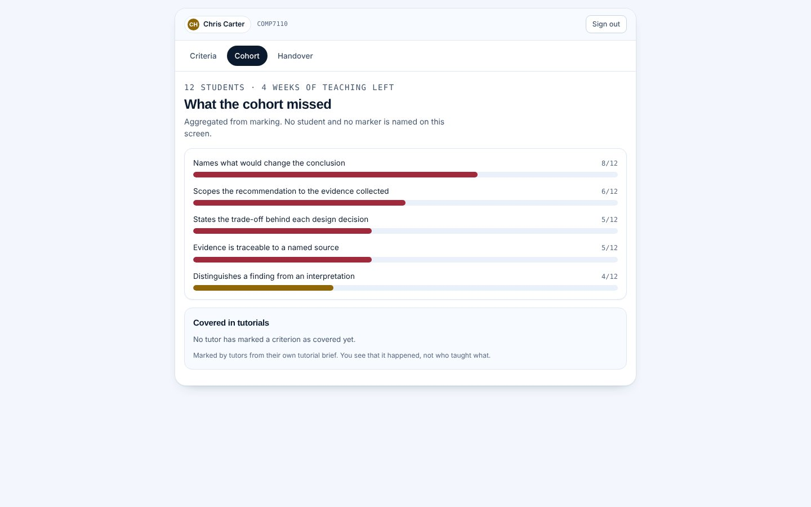

Proofolio: feedback that becomes evidence
A web app that keeps the judgement a marker makes against each criterion, carries it into the student's next assignment, and builds it into a dated record of what they can do.
The problem
In large university courses, feedback breaks down at both ends. Marks often arrive after the next assignment has started, and comments are short because sessional tutors are paid by the minute. Meanwhile, what a tutor notices while marking never reaches the coordinator or next semester's tutors, because most sessional staff don't come back.
Feedback "disappears once the next assignment starts".
What students told us in interviews
Testing the problem with 32 interviews
Our team of five interviewed 32 people: students, tutors and an alumnus. I scored five candidate topics on access, evidence, crowding, buildability and ethics, wrote the direction brief the team chose, and conducted five of the interviews.
I built the team's Business Model Canvas and Value Proposition Canvas. The course method marked each item as a hypothesis, a fact or killed. I added a fourth state, so an idea backed by one or two people was never presented as fact alongside one backed by many.

Five requirements that were really one
The team proposed 10 requirements. When I graded them, five turned out to be different views of the same object: the marking criterion. That became our value proposition. I cut four others, including a leaderboard and a help forum, with a reason for each.
I wrote the prototype plan, an eight-screen test flow at three levels of fidelity, and built the "Feedback to Action" prototype. Several of us built prototypes, and the team chose mine for group testing because it matched the agreed requirements most closely.

The pivot
Testing with a tutor mentor and the course coordinator showed that explaining feedback was too thin. ChatGPT already does it for free. But in my usability interviews, both participants asked, without prompting, for a university-verified record of their skills to show employers.
So I reframed the product. AI made explaining feedback free, but a qualified person's dated judgement of what a student actually did is still scarce. I defined four roles for the product: the student as user, the coordinator as champion, the tutor as gatekeeper and the faculty as buyer. Then I built a second prototype around that.

Building the MVP
The team picked me and one teammate to build the app. I made the templates, styling and copy for every screen, the student views, the seed data and the documentation. My teammate built the data models, the tutor and coordinator views, the access tests and the deployment.
- 18 pages and 9 database tables, with access rules for students, tutors and coordinators
- Zero WCAG 2.0 and 2.1 AA violations across all 18 pages in axe-core, and all 21 colour contrast pairs pass
- Checked at 320 pixels wide, at 200% zoom and by keyboard. Testing found four bugs, all fixed



My role
Topic research and direction, five interviews, the Business Model and Value Proposition Canvases, requirements grading, the prototype plan, both prototypes, usability testing, the pivot, and co-building the MVP. Some research and design documents were drafted with Claude from my direction, decisions and interview data.